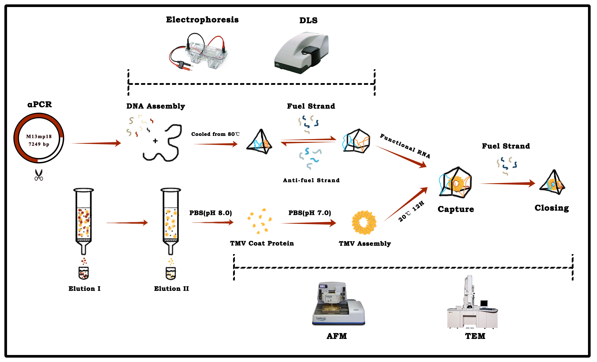
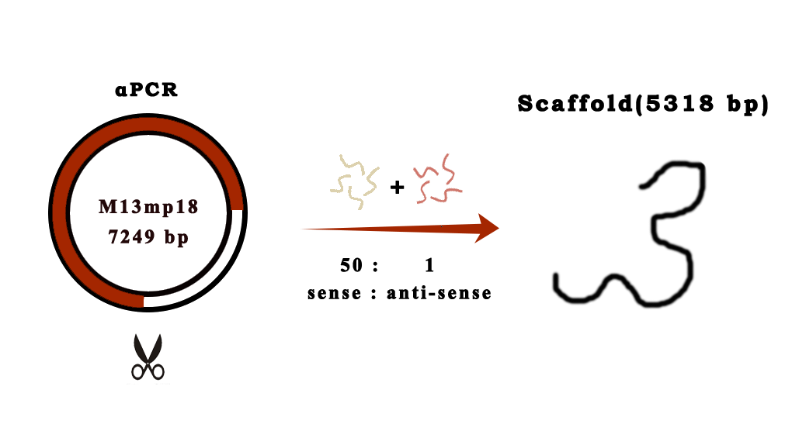
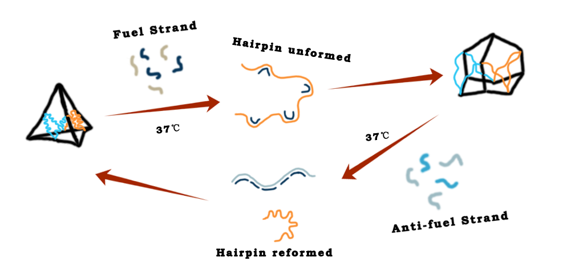
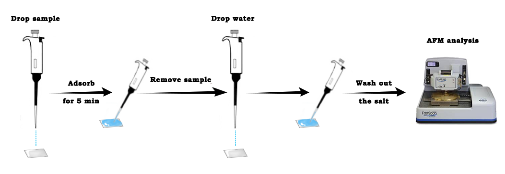
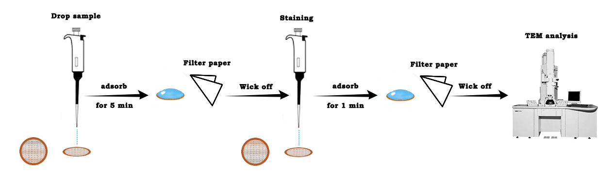
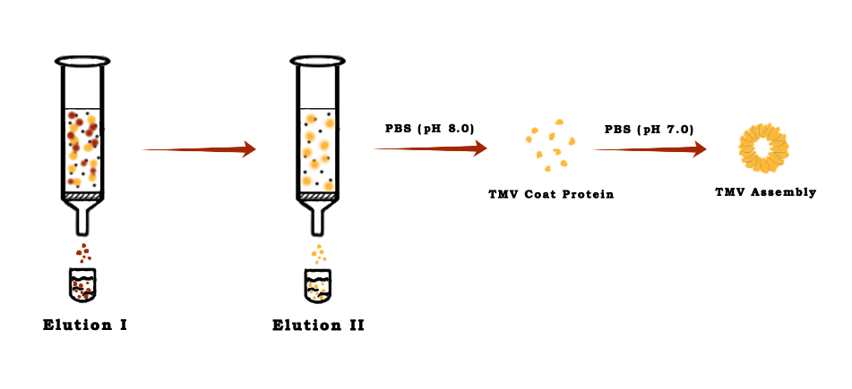
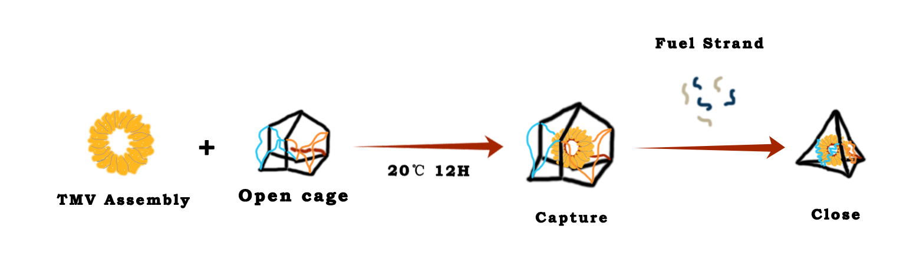

An Overall View

Materials
- Q5® High-Fidelity DNA Polymerase (M0491S), M13mp18 RF I DNA (N4018S),M13mp18 Single-stranded DNA(N4040S) were purchased from NEB. NaH2PO4, Na2HPO4 , MgCl2, uranyl acetate, Tris base, agarose(biowest), Phosphotungstic acid, Gel Extraction Kit (BioFlux)
- Electrophoresis apparatus (Power B, Cavoy), Atomic force microscope (Dimension FastScan, Bruker), Transmission electron microscope, dynamic light scattering.
Generation of Scaffold
- To minimize the amount of excess ssDNA in the final structure, which may result in nonspecific object aggregation or interfere with folding, we decided to perform asymmetric Polymerase Chain Reaction( αPCR ) to generate object-specific scaffolds for folding.

- αPCR was performed with a sense primer concentration of 1 mM, an anti-sense primer concentration of 20 nM, 50 ng of M13mp18 dsDNA template, 200 mM dNTPs mixed in a final volume of 50 μL and 1 unit of Q5™ High-Fidelity DNA Polymerase(NEB). The αPCR program set as follows: 95 °C, 4 min for the initial denaturation; followed by 35 to 40 cycles of 95 °C, 30 s; 55 °C , 30 s; 72 °C, 5 min; 72 ℃ for final extension, and hold at 4 ℃.
Identification and Purification
- Run the αPCR products through 0.8% low-melting temperature agarose gel (0.2 g agarose, 25 mL 1×TAE), under a constant voltage of 80 V. The products were extracted and purified by Gel DNA Recovery Kit.
Origami Reaction Protocol
Prepare the Reaction
- All staples were diluted with ddH2O to a concentration of 500 nM. Scaffold is mixed with staple strands in a concentration ratio of 1: 10 in 1×TAE-Mg2+. All the details are shown in the table below.
| Initial Concentration | Volume [μL] | Final concentration | |
|---|---|---|---|
| Scaffold | 10~20 nM | 25 | 5~10 nM |
| Staple | 167~333 nM | 15 | 50~100 nM |
| 10×TAE | —— | 5 | 1×TAE |
| 10×Mg2+ buffer | 100~200 mM | 5 | 10~20 mM |
- To make sure the exact concentration of Mg2+ requirement, the folding reaction took place under Mg2+ concentration increasing from 10 mM to 20 mM.
Annealing
- The temperature was decreased from 80 ℃ to 60 ℃ at 4 min ℃-1, then from 60 ℃ to 24 ℃ at 20 min/℃.
- The products were holden at 4 ℃
Structural Change
Expansion
- 25 μL Origami sample were taken and mixed with 25 μL fuel strand solution, which measured to be 15 times the concentration of the Origami products.
- The solutions were incubated at 37 ℃ for 30 min, then they were cooled down to 15 ℃ by 3 ℃/ min.

Constriction
- 25 μL expansion samples were taken and mixed with 25 μL anti-fuel strand solution, making the molar ratio of fuel strand to anti-fuel strand be 5:1.
- The solutions were incubated at 37 ℃ for 30 min, then they were cooled down to 15 ℃ by 3 ℃/ min.
Purification of Origami Products
- The αPCR products run through 2% low-melting temperature agarose gel ( 0.5 g agarose, 25 mL 1×TAE) under a constant voltage of 80 V, then be extracted and purified with Gel DNA Recovery Kit.
Atomic Force Microscopy (AFM) Characterization
- A 5 μL volume of the sample were taken for the Atomic Force Microscopy (AFM). Let it be deposited onto a freshly cleaved silicon slice and left it to adsorb the surface for 5 min. Then it was washed with ddH2O to remove the salt, allowing it to air dry and waiting for imaging.
- The DNA samples were imaged in tapping mode.

Transmission Electron Microscopy (TEM) Characterization
- 5 μL of the sample solution were dropped on the grid and left it to adsorb for 5 min. For staining, the grid was touched with a drop of 2% uranyl acetate solution for 1 min. Let the grid dry and it was kept at room temperature.

Dynamic Light Scattering Measurement
- For the measurement, 100 μL sample solutions were measured at a concentration of 10 nM in 1×TAE Buffer. The sample temperature was maintained at 25 ℃ during measurement.
Assembly of TMV Coat Protein (CP)

- The TMV coat proteins purified by DEAE anion exchange chromatography were disaggregated through dialyzing in the PBS buffer (pH 8.0) at 4 ℃ for 48 h, as for assembly of TMV disc, the disaggregated proteins were dialyzed in PBS buffer (pH 7.0) at 4 ℃ for more than 24 h.
DNA-RNA Hybridization
- The RNA was mixed with the assembled cages in a concentration ratio of 1:2
- The hybridization ramp was heated at 95 ℃ for 5 min, then cooled from 40 ℃ to 15 ℃ by 30 min/ 5℃.
Capture of the TMV Disc

- The assembled TMV disc was incubated with the open cage at 20 ℃, 12 h. Then the mixture was added with anti-fuel strands and incubated for another 40 min to close the cage.